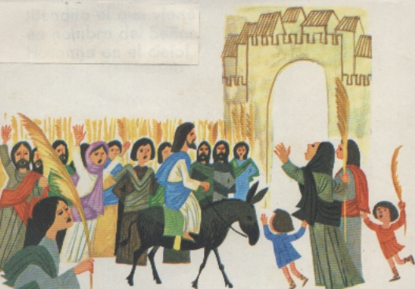

TIEMPO DE CUARESMA
Es un periodo de 40 días antes de la Semana Santa.
El Miércoles de Ceniza, el sacerdote nos hace en la frente la señal de la cruz con ceniza, nos recuerda que después de muertos nos convertimos en polvo y que lo más importante es el alma que se encontrará con Dios
DOMINGO DE RAMOS
Es el último día de la Cuaresma.
Los cristianos recordamos y celebramos la entrada de Jesús en Jerusalén, montado en un burrito.
El día siguiente lunes empieza la Semana Santa.
SEMANA SANTA
La Semana Santa es la semana que sigue al Domingo de Ramos.
Empieza el Lunes Santo y termina el Domingo de Resurrección.
Jueves Santo
Se recuerda y celebra:1-La última cena de Jesús.
2-El lavado de pies, signo de amor y de servicio.
3-La institución de los sacramentos de la Eucaristía y el Orden Sacerdotal.
Viernes Santo
Le recuerda y celebra la pasión y muerte de Jesús en la cruz.
Sábado Santo
Se recuerda aquel sábado entero en el que el cuerpo de Jesús paso enterrado en el sepulcro.
Domingo de Resurrección
Es el día más importante de la Semana Santa.Se recuerda que Jesús venció a la muerte, resucitó glorioso, subió al cielo y está sentado a la derecha de Dios Padre.